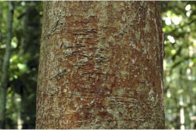
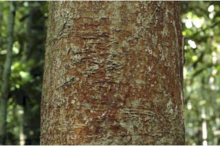

Images :
 



| Habit : | Lofty buttressed trees , up to 60 m tall. |
| Leaves : | Leaves simple , opposite , decussate ; petiole 0.4-1.3 cm long, canaliculate , glabrous ; lamina 5-10 x 2.5-4 cm, elliptic ( linear in young seedling and later becomes narrow oblong ), apex caudate or caudate - acuminate , ( acumen 0.8-1.8 cm long), base acute or attenuate , margin entire , chartaceous , glabrous , pellucid gland dotted, leaves pink when young; midrib canaliculate ; intramarginal nerve present; secondary_nerves closely parallel ; tertiary veins slender, admedially ramified . |
| Inflorescence / Flower : | Inflorescence corymbose cyme , terminal ; flowers white. |
| Fruit and Seed : | Berry subglobose , crowned by persistent calyx , purple; seed one. |